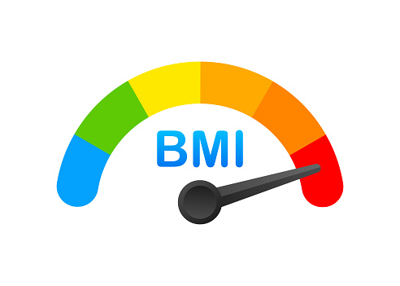

Body Mass Index atau disingkat BMI adalah salah satu cara mengetahui berat badan ideal yang diukur berdasarkan berat dan tinggi badan Anda. Dengan menghitungnya menggunakan rumus BMI, Anda bisa melihat apakah status berat badan Anda termasuk kategori normal, kurang, berlebih, atau bahkan obesitas. (Sumber: www.sehataqua.co.id)
Inilah program BMI untuk menghitung tinggi (height) dan berat (weight).